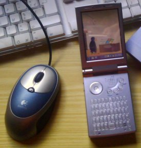

Le Yopy YP3700 est un PDA sous Linux à base d'Intel StrongARM, produit par G.Mate. Parmis ses caractéristiques remarquables, on peut noter l'utilisation de XWindow pour la partie graphique, contrairement à d'autre appareils de poches sous Linux qui utilise une interface spécifique (QTopia par exemple), ce qui en fait le plus petit terminal X du monde.
Le Yopy est aussi très proche de l'autre PDA sous Linux, le Zaurus: même famille de processeur, même noyau pour l'OS, connection USB identique (le driver USB pour MacOSX et Linux est le même pour les deux machines).
Ses autres caractéristiques sont:
Le Yopy possède de nombreux logiciels livrés avec, dont un navigateur web (Dillo), un lecteur de Mail, un lecteur MP3, des jeux (dont xrick, un clone de Rick Dangerous et Doom) et la suite bureautique Hancom Mobile Office. L'utilisation de XWindow et de Linux facilite également le portage des applications Unix et Linux (VLC, Xmame...). Enfin, il utilise un système de gestion de paquetage RPM, l'installation de logiciel en est facilitée.
Personnellement, je n'ai pas pris le Yopy pour son côté PDA, mais plus pour son côté jouet de geek. La présence de Linux, XWindow, la gestion du réseau par l'USB ou le Wifi et la disponibilité de Python, Perl, GCC, MySQL et d'autre outils de développement en font un vrai serveur/station de travail Unix tenant dans la poche.
Certains sites Web ont pour habitude de montrer un dmesg de leur machine, alors voici celui du Yopy.
Le Yopy est présenté pour le première fois au CeBit 2000 par Samsung. C'est un PDA sous Linux mis au point par GMate, une petite startup coréenne. Samsung se retirant de l'aventure avant la production, GMate décide quand même de commercialiser le Yopy YDK-1000 (YOPY Development Kit), à destination des développeurs.
Le YDK-1000 sera suivi ensuite par les modèles à destination du grand public:
Le Yopy sera importé en France par Tuxmedia.
En mars 2005, la société GMate ferme ses portes, c'est la (triste) fin du Yopy.
Le Yopy communique avec le monde extérieur grâce à une liaison réseau IP. La liaison s'effectue grâce au port USB ou au travers d'une carte wifi Compact Flash.
Le driver réseau USB pour MacOSX est disponible ici.
Une fois la liaison effectuée, il suffit de se connecter au Yopy en utilisant son adresse IP. Il propose plusieurs services comme le FTP, pour transférer des données, telnet pour ouvrir un shell et un serveur web qui reprend les fonctions PIM du Yopy et propose l'upload vers le Yopy ainsi que la sauvegarde des information du PIM.
{kind=link}
{kind=link}